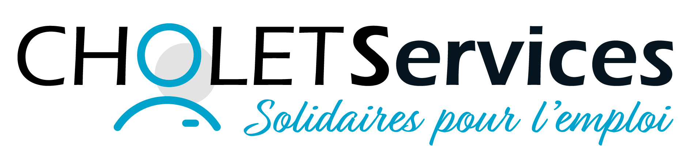

×

Développeur Web — BTS SIO SLAM
Étudiant en développement web, spécialisé en PHP et JavaScript. Je conçois des applications dynamiques avec gestion des utilisateurs, systèmes d’accès et architecture structurée. Actuellement en recherche d'opportunités pour évoluer vers la gestion de projet.
Site réalisé pour une vraie entreprise, BST79. Il s'agit d'une découverte de l'environnement WordPress, avec personnalisation de pages, gestion de contenus et adaptation du design au client.
Site dynamique en PHP pour une pension canine fictive. Les utilisateurs pouvaient s'inscrire, se connecter, enregistrer leurs chiens et demander des réservations.
Back-office PHP pour enregistrer un modèle, un avion, le personnel, un aéroport et un équipage. Ce projet comprend des CRUD complets et a été hébergé entièrement fonctionnel.
Site de demande et d'offre de services entre voisins, réalisé avec Symfony et une API PHP. Le projet inclut également une application mobile développée avec Android Studio.


Cette veille technologique porte sur les impacts de l’intelligence artificielle
dans le domaine du développement informatique.
Aujourd’hui, des outils comme GitHub Copilot, ChatGPT ou encore Cursor
permettent d’assister les développeurs dans la génération de code,
la correction d’erreurs et l’automatisation de certaines tâches.
L’objectif de cette veille est de comprendre comment l’IA transforme
le métier de développeur, ses avantages mais aussi ses limites.
La principale méthode utilisée pour récupérer les informations
est Google Alerts.
Cet outil permet de recevoir automatiquement des emails
lorsqu’un nouvel article est publié sur un sujet précis.
Exemple d’alerte utilisée :
"IA développement informatique"
Cela permet d’automatiser la veille technologique et de suivre
régulièrement les nouvelles tendances sans effectuer de recherches manuelles.
Selon l’enquête Stack Overflow Developer Survey 2025,
plus de 84 % des développeurs utilisent ou prévoient
d’utiliser des outils d’intelligence artificielle
dans leur processus de développement.
Les assistants IA permettent notamment :
- la génération automatique de code,
- l’aide au débogage,
- l’autocomplétion,
- la génération de documentation.
Malgré cela, les développeurs gardent un rôle essentiel
de vérification et de supervision du code produit.
Source : Stack Overflow Developer Survey 2025
https://survey.stackoverflow.co/2025/ai
Plusieurs études montrent que l’IA améliore la productivité,
mais qu’elle peut également générer des erreurs,
du code peu sécurisé ou difficile à maintenir.
Les développeurs doivent donc vérifier les suggestions générées
par les outils IA afin d’éviter les problèmes de qualité,
de sécurité ou de compréhension du projet.
L’article explique également que le rôle du développeur évolue
davantage vers l’architecture logicielle,
la supervision et les choix techniques.
Source : LeMagIT
https://www.lemagit.fr/actualites/366628456/Les-developpeurs-perdent-confiance-dans-les-resultats-de-la-GenAI-etude
En complément de Google Alerts,
des flux RSS sont utilisés afin de centraliser
les articles publiés sur l’intelligence artificielle.
Exemple de flux RSS :
https://www.lemonde.fr/intelligence-artificielle/rss_full.xml
Les flux RSS permettent de recevoir automatiquement
les nouveaux articles dans un lecteur comme Feedly.
L’intelligence artificielle transforme fortement
le domaine du développement informatique.
Les développeurs gagnent du temps grâce aux assistants IA,
mais doivent toujours analyser, corriger et sécuriser
le code généré.
L’IA devient donc un outil d’assistance puissant,
sans remplacer les compétences humaines nécessaires
dans la conception et la logique des applications.
Vous avez un projet, une opportunité de stage ou d'alternance ? Je suis disponible et réponds rapidement à toute sollicitation.